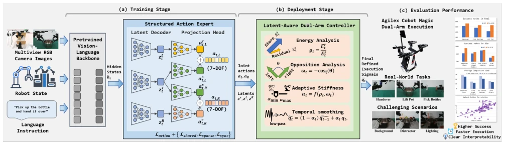
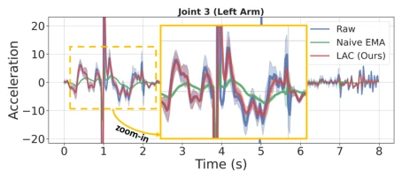

This paper prescribes a "structured" remedy for dual-arm VLA models. The authors keenly point out that while existing end-to-end VLA (such as π0) can exhibit emergent collaborative behaviors, implicit coordination is often insufficient in tightly coupled tasks, akin to letting two people dance blindfolded, prone to collisions. The core highlight of Co-VLA lies in the SAE module, which forces the decomposition of actions into "shared intent" and "residual execution", making it more transparent than black-box regression. The LAC controller acts like a real-time tuner, dynamically adjusting smoothness based on the action's "energy" and "antagonism", much smarter than simple EMA filtering. However, although Co-Motion data collection is efficient, training difficulty increases, indicating that high-concurrency data imposes extremely high requirements on model inference. Overall, this is a beneficial attempt from "black box" to "white box", but still relies on manual priors in loss function selection, lacking sufficient automation.
The core difficulty in dual-arm manipulation lies in coordination, rather than mere action generation. Existing VLA models (such as RT-2 [1], OpenVLA [2], π0 [4]) typically treat dual-arm actions as a single vector for regression, implicitly learning collaborative relationships. However, as task coupling increases (e.g., handover, collaborative carrying), this implicit mechanism struggles to guarantee temporal synchronization, role allocation, and safety. The paper points out that collaboration is essentially a structure on actions, not the actions themselves. Existing methods lack explicit structural priors, making synchronization strength, execution asymmetry, and safety behaviors difficult to interpret or adjust during deployment. Furthermore, traditional demonstration data is mostly sequential execution, lacking concurrent coordination samples, limiting the model's generalization ability to high-concurrency scenarios. Therefore, an architecture is needed that can explicitly separate task-level intent from execution-level details, and perform semantic-aware control correction during deployment.
The overall process comprises three parts: Structured Action Expert (SAE), Perceptual Implicit Controller (LAC), and Co-Motion data paradigm. SAE replaces the VLA's monolithic action head, decoding hidden state ht into shared latent variable zs (task-level intent) and left/right arm residual latent variables zL, zR (execution details), with final actions synthesized via addition. Task-adaptive losses are introduced during training, such as sparse residual regularization (encouraging symmetry), shared velocity consistency (reinforcing intent), and temporal synchronization loss (constraining timing). LAC runs during deployment, not modifying the policy, but parsing the shared/residual energy ratio ρt and residual antagonism score ωt output by SAE. Based on these two metrics, LAC dynamically adjusts execution stiffness αt: accelerates when macro-dominant, preserves fidelity when precision-critical, and smooths when noisy. Co-Motion collects high-concurrency trajectories in simulation through parallel scheduling, shared reference frames, and safe intermediate goals, supplementing the training distribution.
Experiments were conducted on RoboTwin 2.0 [12] simulation and AgileX real robots. Baselines include π0 [4] and π0.5 [5]. On RoboTwin, Co-VLA improved success rate in Handover Block task from 64% for π0 to 91%, with an average Easy setting improvement of 6%. In real robot OOD testing, Co-VLA+LAC improved success rate in Lift Pot task from 33% for π0 to 37%, and Handover from 13% to 27%. Ablation studies show that LAC preserves key fine-tuning actions better than EMA filtering. Co-Motion data reduced demonstration time by 10-25%, but training success rate decreased (e.g., π0 dropped from 76% to 50%), revealing the trade-off between efficiency and learnability. The shared latent variables of SAE are positively correlated with synchronization, validating the effectiveness of structural decomposition.
其他图片Other Figures

Fig. 1: Overview of our dual-arm VLA system. We design a Structured Action Expert (SAE) that interprets the hidden states from the VLM backbone into a structured latent space, then produces decomposed actions through separate projection heads. At deployment time, a Latent-Aware Controller (LAC) interprets the learned coordination representations to refine joint-level commands for accurate, synchronized, smooth, and safe execution.
Fig. 3: Visualization of sequential motion paradigm (left) and our designed collaborative motion paradigm (right).

Fig. 7: Effect of LAC on joint trajectories. LAC produces smoother trajectories with fewer acceleration peaks and lower cross-rollout variance while preserving task-critical motion patterns. Naive EMA filtering yields the smoothest curves but over-suppresses precision-critical residual adjust- ments, leading to reduced task success.